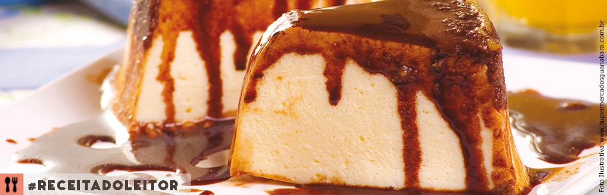

Pudim de Sorvete

Ingredientes
- 1 lata de leite condensado
- 2 colheres de maisena
- 500ml de leite
- 4 ovos
- 1 lata de creme de leite
Calda:
- 3 colheres (sopa) de chocolate em pó
- 100ml de leite
Instruções
- Bata no liquidificador o leite condensado, a maisena, o leite e as gemas.
- Depois coloque em uma panela e leve ao fogo até formar um creme, mexendo sempre, deixe esfriar.
- Bata 4 claras em neve, misture o creme de leite com as claras, depois misture com o creme (feito no fogo) e bata na batedeira por 5 minutos.
- Calda: Misture o chocolate com o leite e leve ao fogo mexendo sempre até formar uma calda.
- Montagem: Espalhe em uma forma de pudim 1º a calda, depois o creme e leve ao congelador/freezer.
Observações
Dica: Fiz essa receita com calda de açúcar queimado, fica muito bom também.
Referência
https://receitasdeminuto.com/pudim-de-sorvete/